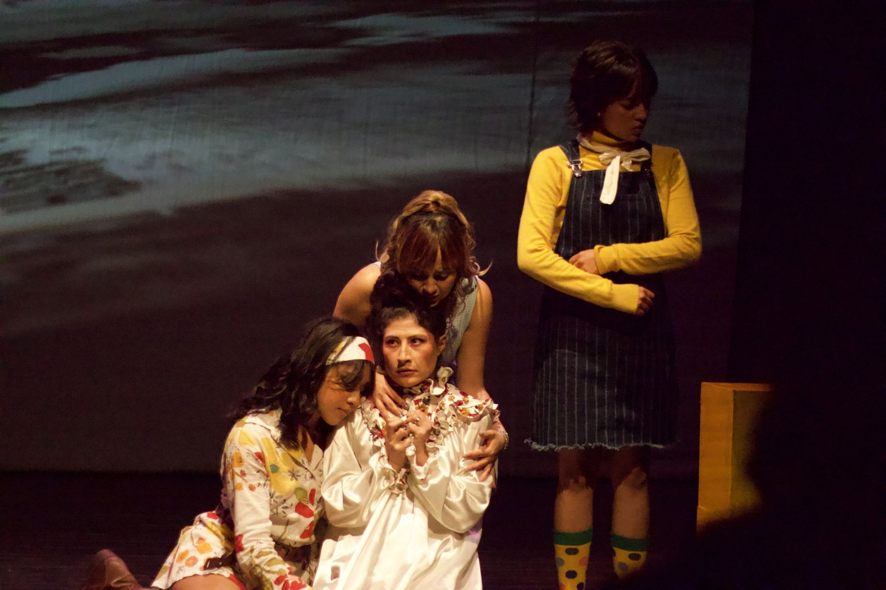

Inauguración del Festival
Uriela y sus hermanas
Sinopsis y propuesta
Uriela y sus hermanas, experiencia dos. Trilogía de las Memorias es resultado del proyecto de investigación-creación “Partituras y coreografías experiencias” del Departamento de Artes Escénicas de la Universidad de Caldas, con el apoyo del Giro Colectivo Artístico y Andromeda 3.0. La experiencia de Uriela toma como punto de partida los personajes de la novela Casa de Furia de Evelio Rosero. En el marco de una fiesta de aniversario de bodas en abril de 1970, se desencadenan una serie de acontecimientos íntimos y trágicos alrededor de los miembros de la familia Caicedo Santacruz. Conforme avanza la celebración, las distintas narraciones se superponen como los peldaños de una escalera hasta converger en una única imagen: la de una fiesta donde cada personaje encuentra su destino.
En esta obra, la memoria opera a partir de la casa familiar, entendida como espacio emocional, archivo afectivo y territorio de aparición de los recuerdos, y adquiere una presencia activa por medio del televisor, el cual se convierte a su vez en dispositivo visual que superpone a un narrador con la proyección de imágenes relacionadas con las escenas y el contexto histórico.
Las partituras corporales funcionan aquí como dispositivos de construcción dramatúrgica capaces de liberar las memorias contenidas en los cuerpos. Las partituras develan de forma extra cotidiana el recorrido de los personajes por la obra, así como las emociones que ciertos acontecimientos generan en ellos.
Descripción del proyecto
Partituras y coreografías experienciales, un diálogo entre el arte escénico, los dispositivos de captura de movimiento y la inteligencia artificial. Código PRY-402-PRI- Vicerrectoría de Investigaciones y Posgrados, Universidad de Caldas.
El teatro y la danza son disciplinas escénicas que tienen en común el trabajo sobre el cuerpo y la puesta en escena. El cuerpo es el epicentro del movimiento que permite la creación a través de técnica en la danza como las coreografías, y en el teatro, las partituras, término operativo que ha sido propuesto desde la óptica de la Antropología Teatral por Eugenio Barba y que permite la generación de un vínculo entre ambas disciplinas. En este sentido, el movimiento creado a través de partituras o coreografías genera un diálogo interdisciplinar que apunta al surgimiento de una disciplina intermedia, la danza-teatro o el teatro-danza.
En relación con la puesta en escena y, con ello, el diálogo con el espectador, el paradigma experiencial propuesto por Lewis y Bartley (2023), -que redefine dicha relación actor / bailarín y espectador-, nos anima a proponer un proyecto de investigación - creación que permita crear una experiencia de movimiento en la que actores, bailarines y espectadores puedan interactuar de forma lúdica por medio del diseño de una serie de coreografías y partituras. En suma, una obra escénica en vivo, con posibilidades de expansión a lo virtual y que esté mediada por el uso de dispositivos de captura de movimiento como el Kinect o el software Isadora, así como la integración, de manera importante, de modelos de Inteligencia Artificial.
El equipo interdisciplinario de investigación reúne expertos en teatro, danza, sonido y captura de movimiento de Colombia y el exterior, con un interés común por la interacción del arte escénico con la tecnología, se destaca la vinculación como socios estratégicos al proyecto de la Universidad de Purdue (USA), la Universidad Carlos III y el Instituto Stocos (España) y la Universidad Pedagógica Nacional de Bogotá en relación con la capacitación, transferencia de conocimiento y cocreación. Así mismo, estará integrado por estudiantes de pregrado y posgrado de la Universidad de Caldas.
Ficha técnica
- Elenco
- Juan Camilo Molina Cruz *
Paula Andrea Leguizamon Londoño *
Marcela González Pérez *
Andrea Castillo Cadavid *
Sasha Eraso Villota *
Isabella Cubillos Agudelo
Natalia Motato Valencia
Daniel Soler Barrera
Brahian Cardona Muñoz - Dirección coreográfica
- Claudia Patricia Leguizamon Londoño *
- Dirección de Partituras
- Sergio Sierra Monsalve *
- Dirección audiovisual
- Daniel Ariza Gómez *
- Dirección sonora y narración
- Juan Manuel Soto Gómez *
- Diseño de vestuario
- Andrea Castillo Cadavid *
- Diseño de iluminación
- Paola Andrea Vargas *
- Asistente de investigación
- Melissa Franco Gallego
- Dirección general
- Sergio Sierra Monsalve *
* Profesores Universidad de Caldas
Dirección
Sergio Sierra M. Diseño y Dirección de Partituras. Profesor asociado de la Universidad de Caldas y Doctor en Estudios Teatrales por la Universidad Autónoma de Barcelona. Su carrera se desarrolla en el campo del diseño, análisis y captura de movimiento corporal para la escena en vivo y virtual, con experiencia en el uso de software y dispositivos como Kinect y Mocap e Isadora.
Sus propuestas y resultados han sido validados en eventos como el simposio “Tanz Der Dinge Symposium der Gesellschat Für (GTF) “Things that Dance Congress”. GTF karlsruhe Alemania en Octubre de 2018, obtener la beca Nexo Global para el Desarrollo de Industrias Creativas financiada por 100.000 Strongs of the America y Colciencias con el proyecto “Intercultural Communication through Devised Theatre” en asociación con la Universidad de Purdue en 2019, el festival internacional de la imagen 2022, 2023, así como la orientación del taller Movement Design Thinking in action, a collaborative research creation workshop, en calidad de profesor invitado por la Universidad de Purdue en 2023 y como artista invitado por la misma universidad para diseñar el proyecto Dramaturgy Living in Motion entre agosto y septiembre de 2024.